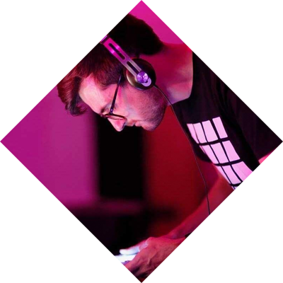

Welcome to { Live : JS } A collective of audio and visual artists who build live experinces, shows and installations. Why JS? Because that's the main technology we use: JavaScript.
Ruth John
Ruth is a digital artist and projectoralist. She mixes video and other abstract coded clips with her own hand coded software: Vixxrr
Tim Pietrusky
Tim doesn't do any shows without LEDs, bright shiny sound triggered LEDs. Creater of NERDISCO and electronic drum player, Tim merges web development with a lot of fun things.
Dave Mactintosh
Dave is a midi obsessed JavaScript developer, he builds installations using realtime, proximity based technologies
Sam Wray

Sam, better known as 2xaa, is a profound DJ. Creator of modV and writer of music using Nintendo Game Boys to play at shows.
Barak Chamo
Barak makes both music and visuals. A coder and artist he's also working on custom software for shows.
Martin Schuhfuss
Martin loves working with javascript and selfmade electronics, like lighting contraptions and dmx-interfaces. Creator of the fivetwelve-library to control professional lighting using css.
Matt McKegg
Matt is a javaScript hacker and backyard musician. He built the awesome Loop Drop, an open source tool for live electronic music with Electron and Web Audio.
Get In Touch
You can book us, we build installations, we play gigs, we give talks about what we do and we have workshops on the horizon